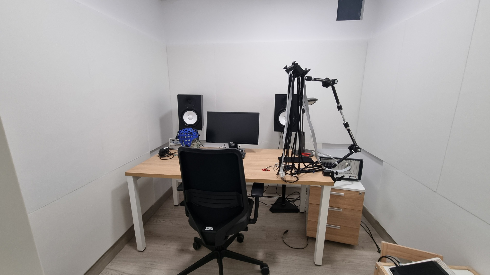
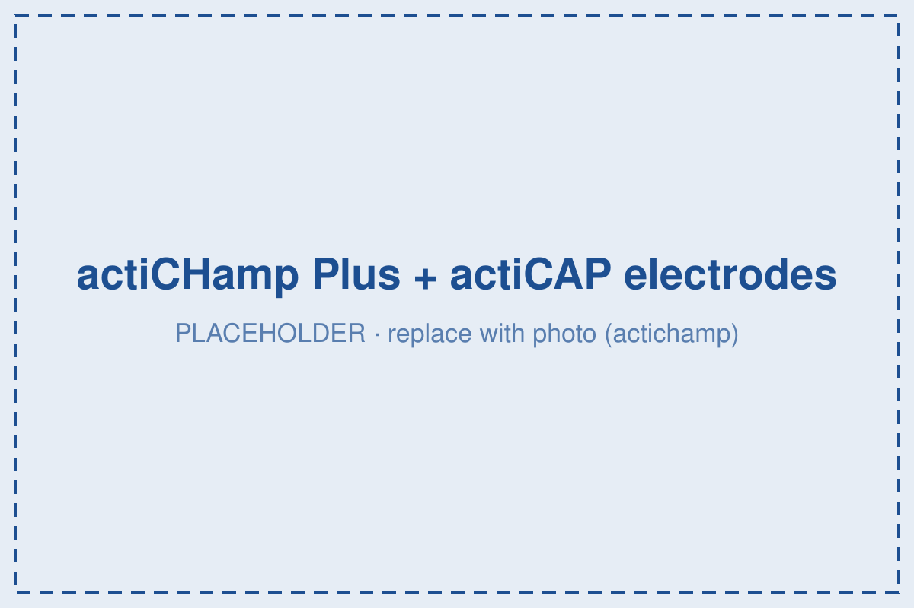
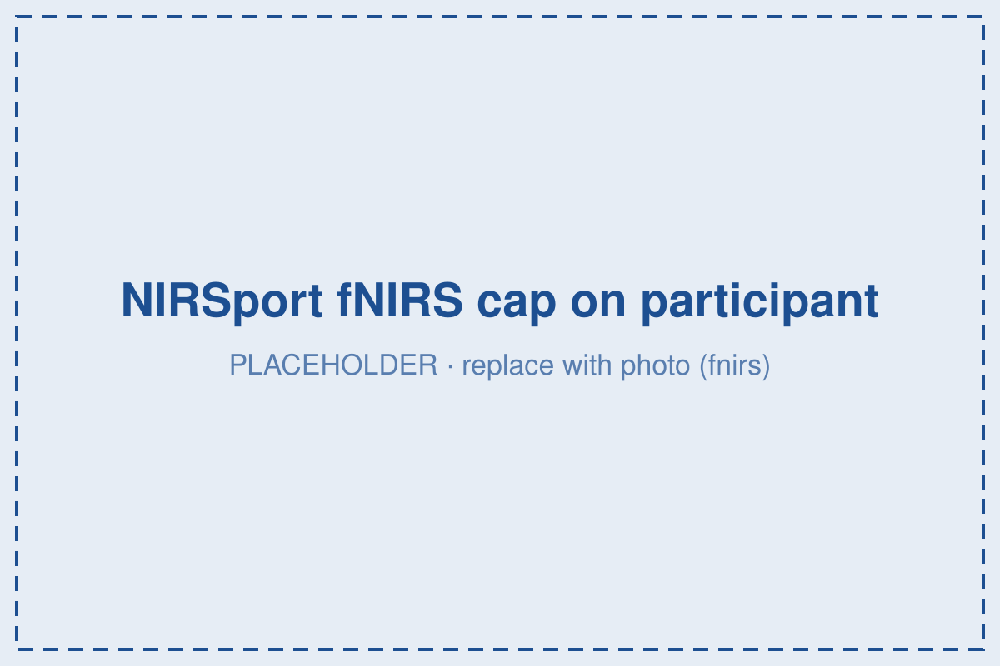
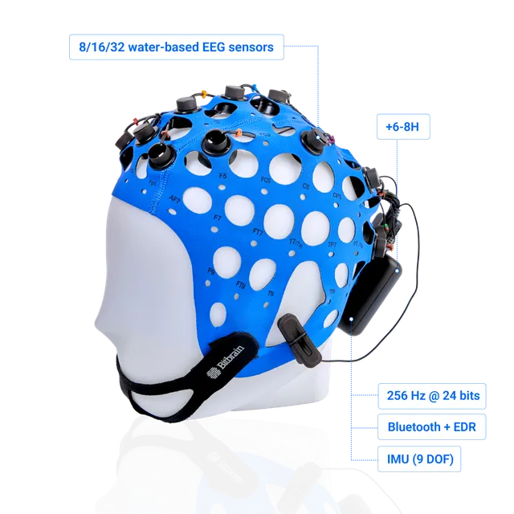
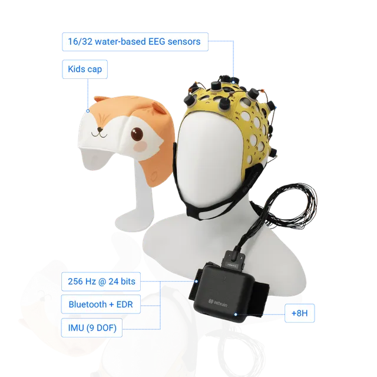
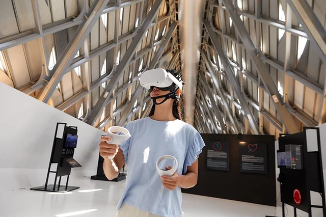
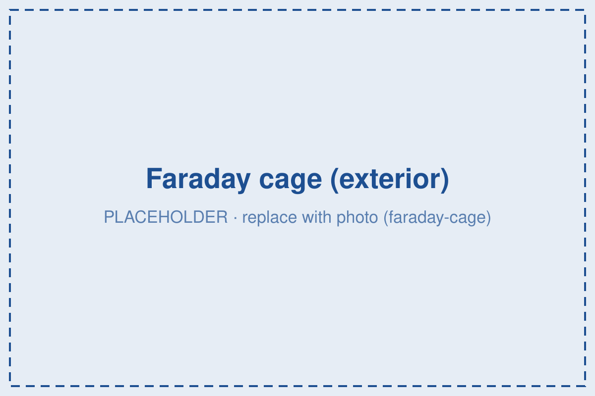
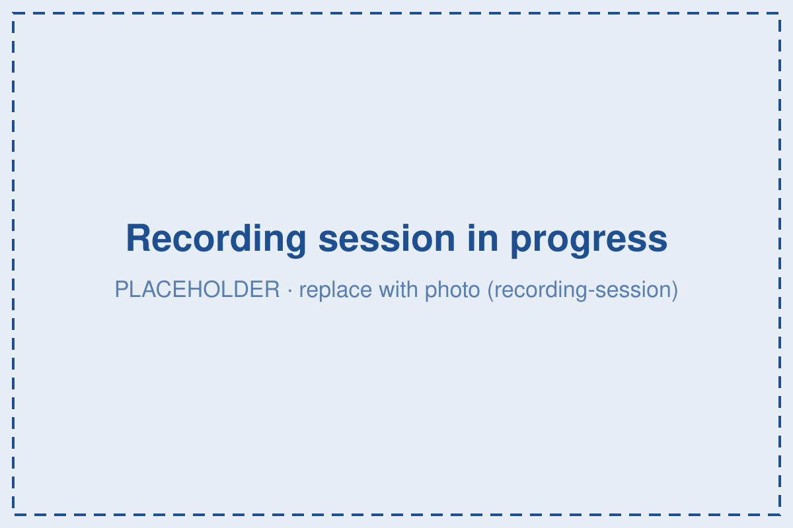

The SigBio Lab (Signal Processing and Biomedical Applications Laboratory) is the experimental laboratory of the SiPBA Research Lab (TIC-218) at the University of Granada. It operates as a shared research facility that provides technical, methodological and training support in the acquisition, processing and modelling of biomedical data to researchers, research groups, and clinical or industrial partners.
The lab focuses on the analysis of physiological signals, their integration with imaging modalities (in particular with the upcoming low-field magnetic resonance imaging facility), and the development of advanced artificial intelligence methods.

Equipment
High-density EEG: BrainVision actiCHamp Plus
Modular research amplifier (Brain Products) for high-density electroencephalography (EEG) and event-related potential (ERP) recordings.
- Active electrodes (actiCAP slim / snap) with pre-amplification at the electrode itself, reducing movement artifacts and line noise. Built-in LEDs show electrode impedance in real time.
- Lab configuration: 32 channels. The amplifier is modular (32-channel blocks, expandable up to 160 channels), with 24-bit resolution and sampling rates of up to 100 kHz.
- Battery powered (external PowerUnit), with galvanic isolation from the mains.
- 8 auxiliary inputs for peripheral signals (EOG, EMG, ECG, GSR, accelerometers) and an 8-bit TTL trigger port to synchronise with stimulus presentation.

Functional near-infrared spectroscopy (fNIRS)
Non-invasive optical neuroimaging system that measures the cortical haemodynamic response through changes in oxyhaemoglobin (HbO₂) and deoxyhaemoglobin (HbR) concentration.
- NIRSport 64-channel system (16 sources × 16 detectors).
- Short-separation channels to remove the superficial (scalp) vascular component.
- Being an optical technique, it neither produces nor suffers electrical interference, enabling simultaneous hybrid fNIRS + EEG recordings.

Wearable water-based EEG: Bitbrain Versatile
A new addition to the lab: three wireless, wearable Bitbrain Versatile EEG systems that give high mobility to participants. Recordings are no longer tied to a chair in front of a screen: participants can walk, move and interact, so studies can take place in naturalistic, ambulatory and neuroergonomics settings, inside or outside the lab.
All three systems share the same core features:
- Hydrophilic sponge electrodes soaked in tap water or saline instead of gel: set-up in 5–10 minutes and no residue left in the hair.
- Wireless Bluetooth transmission and on-board SD card storage, so recordings continue even away from the acquisition computer.
- Integrated 9-axis IMU to record and compensate for head movements.
| System | Channels | Connectivity | Typical use |
|---|---|---|---|
| Versatile EEG 8 | 8 | Bluetooth, SD card | Fast set-up, mobile and out-of-lab studies |
| Versatile Kids 32 (baby pack) | 32 | Bluetooth, SD card | Infants and children |
| Versatile Plus 32 | 32 | USB, Bluetooth, SD card | Mobile studies needing a wired link to the acquisition system |
Versatile Kids 32 is designed for studies with infants and children. It comes with caps in paediatric sizes and child-friendly figures that make the session more comfortable and help keep young participants engaged.
Versatile Plus 32 adds a USB connection to the wireless Bluetooth and SD card options, which makes it easier to integrate with the rest of the lab set-up when a wired link is preferred.



Acoustically conditioned Faraday cage
Shielded enclosure that isolates recordings from mains noise (50 Hz and harmonics) and radio-frequency interference (Wi-Fi, mobile phones, Bluetooth). It is essential for very low-amplitude signals such as EEG (in the 1–100 µV range), high-frequency bands (gamma, > 30 Hz) or auditory brainstem responses.
The cage is fully acoustically conditioned and equipped for studio-quality presentation of music and speech stimuli:
- 16 acoustic absorption panels (1.2 × 0.6 m).
- 2 Yamaha HS8 studio monitors on Gravity SP3202 stands.
- Marani MIR 260E audio processor.

This makes it particularly well suited to studies of auditory perception, music and language, such as those in the ML2BRAIN project.
Other sensors and computing
- Additional biomedical sensors: ECG, EMG, EOG, pressure, temperature, oxygen saturation, etc.
- High-performance computing: UGR parallel computing servers and the group’s own GPU cluster (SiPBA3).
- Specialised software: MATLAB, Python, EEGLAB, FSL, SPM, FreeSurfer, among others.
Services
| Area | Services |
|---|---|
| Signal acquisition | EEG, ECG, EMG, EOG and fNIRS recordings; design and execution of experimental protocols with a specialist technician. |
| Processing and analysis | Filtering and artifact removal, spectral analysis, functional and structural connectivity, image reconstruction and multimodal fusion (EEG-fMRI, fNIRS-MRI), machine learning and advanced statistics. |
| Computing | Access to the HPC/GPU infrastructure and the lab’s specialised software. |
| Consulting | Methodological advice and experimental design. |
| Training and transfer | Workshops, hands-on courses and advice to companies. |
Collaboration and access to facilities
The SigBio Lab is open to external researchers and organisations in two ways:
Scientific collaboration. If your project fits the group’s research lines (neuroimaging and electrophysiology, computer-aided diagnosis, machine learning and explainable AI in medicine), we are happy to discuss a collaboration: joint projects, research stays, thesis co-supervision or joint publications. In this case, use of the lab is agreed within the collaboration.
Service provision. Research groups, public bodies and companies can book the equipment and technical staff at the public rates listed below.

How to request access
- Get in touch at sipba@ugr.es with a short description of the study, the type of recording and the planned dates.
- Submit an official request through the lab’s request form or the UGR Shared Services Office (Oficina de Servicios Comunes).
- Technical assessment and scheduling together with the lab staff.
- Sign the responsible-use agreement before recordings start.
Public rates 2025
| Code | Service | Price (€) |
|---|---|---|
| 1 | Specialist technician (per hour) | 120 |
| 2 | Signal acquisition (EEG, ECG, EMG, fNIRS) with technician | 180 |
| 3 | Biomedical data processing and analysis | 150 |
| 4 | Use of HPC/GPU infrastructure (per hour) | 100 |
| 5 | Methodological advice and experimental design | 120 |
| 6 | Personalised training (per session) | 100 |
| 7 | Data storage and management (per project) | 80 |
Discounts by user type:
| User type | Discount |
|---|---|
| University of Granada (UGR) | 70% |
| Public Research Organisations (OPIs) | 50% |
| Private entities | No discount |
Not sure which service you need, or would like a quote tailored to your study? Write to us at sipba@ugr.es.